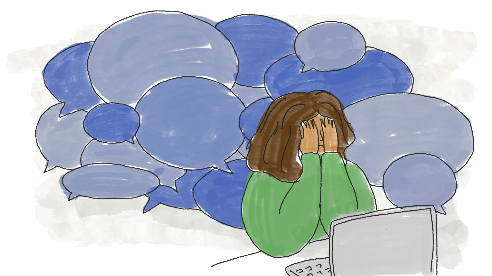

What is
Depression?

Depression
Depression, also known as major depressive disorder, is a common and serious medical condition that negatively affects how a person feels, thinks, and behaves. It can lead to various emotional and physical problems, reducing one’s ability to function in daily life. Depression is not simply a phase of sadness or a weakness—it is a complex mental health condition that requires understanding, treatment, and support. The good news is that depression is treatable. With the right care, most people with depression can overcome its challenges and lead fulfilling lives.
Key Facts About Depression
- Prevalence: Depression affects more than 264 million people globally.
- Gender Differences: Women are more likely than men to experience depression, though anyone can be affected.
- Onset: It can develop at any age but often begins in late adolescence or early adulthood.
- Impact: If left untreated, depression can result in significant challenges, including strained relationships, decreased productivity, and increased risk of self-harm.
Symptoms of Depression
Symptoms of depression can vary between individuals. For a diagnosis, symptoms must persist for at least two weeks.
Common Symptoms Include:
- Persistent sadness, hopelessness, or emptiness
- Loss of interest or pleasure in activities
- Fatigue or low energy
- Sleep disturbances (insomnia or oversleeping)
- Appetite or weight changes (eating too much or too little)
- Difficulty concentrating, remembering, or making decisions
- Feelings of worthlessness, guilt, or self-blame
- Irritability or restlessness
- Physical symptoms such as unexplained aches or pains
- Thoughts of death or suicide
Types of Depression
- Major Depressive Disorder (MDD): Severe symptoms that interfere with daily life.
- Persistent Depressive Disorder (Dysthymia): Chronic, less severe depression lasting two years or more.
- Seasonal Affective Disorder (SAD): Depression occurring seasonally, typically in winter.
- Postpartum Depression: Depression following childbirth, extending beyond typical “baby blues.”
- Psychotic Depression: Severe depression accompanied by delusions or hallucinations.
Causes of Depression
Depression can arise from a combination of biological, genetic, psychological, and environmental factors:
- Biological: Brain chemistry imbalances or hormonal changes.
- Genetics: A family history of depression may increase the risk.
- Environmental: Stressful life events, trauma, or chronic illness.
- Personality Traits: Low self-esteem and high levels of worry can increase susceptibility.

Treatment and Management
Depression is highly treatable with early intervention and proper care.
-
Medications
- Antidepressants: Medications like SSRIs and SNRIs can help balance brain chemicals.
-
Therapy
- Cognitive Behavioral Therapy (CBT): Addresses negative thought patterns.
- Interpersonal Therapy (IPT): Focuses on relationships and interpersonal issues.
- Mindfulness-Based Therapy: Combines mindfulness techniques with therapeutic approaches.
-
Lifestyle Changes
- Regular physical activity to release mood-boosting endorphins.
- Healthy eating habits and consistent sleep routines.
- Practicing relaxation methods like yoga or meditation.
-
Support Systems
- Participating in peer support groups.
- Encouraging family involvement in the recovery process.
-
Advanced Treatments
- Electroconvulsive Therapy (ECT): Effective for severe, treatment-resistant depression.
- Transcranial Magnetic Stimulation (TMS): A non-invasive brain stimulation therapy.
Helpful Resources for Managing Depression
Online Screening Tools:
Emergency Support Services:
- South Africa's SADAG Helpline: Call 0800 567 567 for free, confidential support.
- Global Crisis Resources: Visit Befrienders Worldwide for international helplines.
Self-Help Apps:
- Headspace: Guided meditations to reduce stress and anxiety.
- Moodpath: Tracks symptoms and offers personalized support.
Articles and Guides:
- World Health Organization: Depression
- National Institute of Mental Health (NIMH): Understanding Depression
Counseling Services:
Book a session with one of our experienced counselors to discuss your concerns and develop a personalized treatment plan tailored to your needs.
Breaking the Stigma
Depression is often misunderstood as a sign of weakness or lack of willpower. Educating yourself and others can help break the stigma, encourage open conversations, and ensure people feel safe seeking help.
Hope for Recovery
With effective treatment, most people recover from depression and regain a sense of well-being. Early intervention, a solid support system, and professional guidance offer the best path to healing.
"You say you’re depressed — all I see is resilience. You are allowed to feel messed up and inside out. It doesn’t mean you’re defective–it just means you’re human.” — David Mitchell